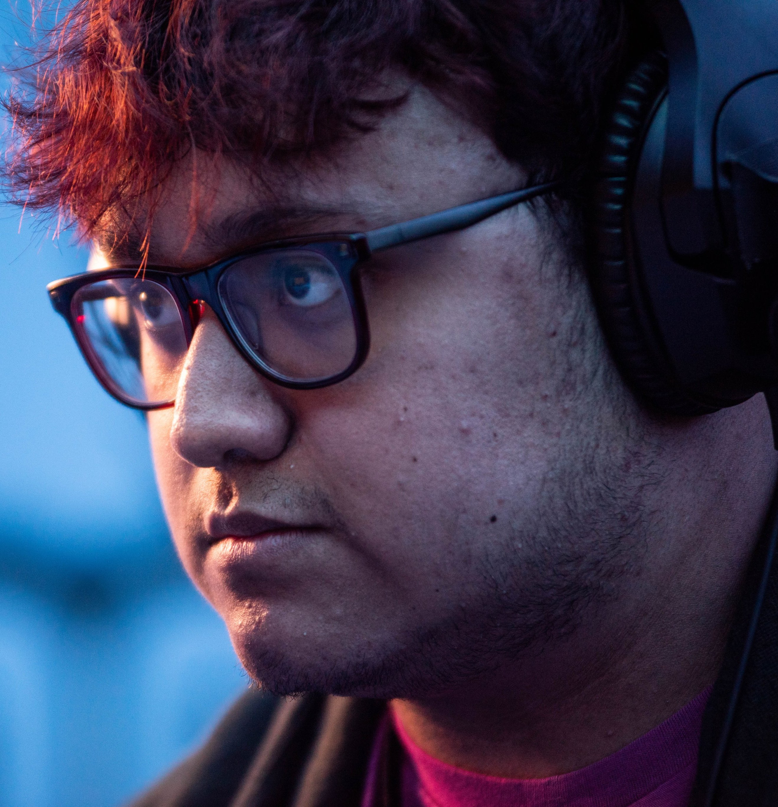

ABOUT
Leonardo López Pérez, also known as MkLeo, is a professional Super Smash Bros. Ultimate player from Mexico. Leo has been competing for years, winning his first tournament when he was only 8 years old, and has been considered a Top-Level player across 3 different Super Smash Bros. Games. He is most notable for Super Smash Bros. Ultimate, where he was considered the uncontested best player in the world between 2019 and 2022, however he was also considered the best Super Smash Bros. for Wii U player in 2018, the first time any player other than Gonzalo 'ZeRo' Barrios was able to obtain that title.
MkLeo was known for playing several characters at the top level, but was most prominent for his masterful piloting of Joker, a character that had struggled to leave a mark in the top level of competition prior.